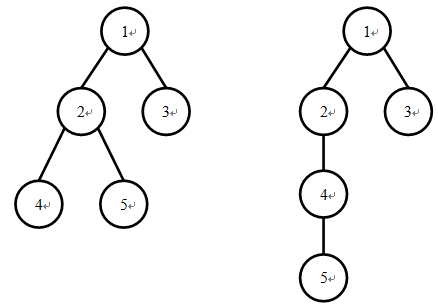

有3行。
第一行包含1个正整数n，表示树的节点个数。
第二行包含n个正整数，是一个1~n的排列，表示树的DFS序。
第三行包含n个正整数，是一个1~n的排列，表示树的BFS序。
输入保证至少存在一棵树符合给定的两个序列。
我们知道一棵有根树可以进行深度优先遍历（DFS）以及广度优先遍历（BFS）来生成这棵树的DFS序以及BFS序。两棵不同的树的DFS序有可能相同，并且它们的BFS序也有可能相同，例如下面两棵树的DFS序都是1 2 4 5 3，BFS序都是1 2 3 4 5

现给定一个DFS序和BFS序，我们想要知道，符合条件的有根树中，树的高度的平均值。即，假如共有K棵不同的有根树具有这组DFS序和BFS序，且他们的高度分别是h1,h2,...,hk，那么请你输出
(h1+h2..+hk)/k
有3行。
第一行包含1个正整数n，表示树的节点个数。
第二行包含n个正整数，是一个1~n的排列，表示树的DFS序。
第三行包含n个正整数，是一个1~n的排列，表示树的BFS序。
输入保证至少存在一棵树符合给定的两个序列。
仅包含1个实数，四舍五入保留恰好三位小数，表示树高的平均值。
5
1 2 4 5 3
1 2 3 4 5
3.500【评分方式】
如果输出文件的答案与标准输出的差不超过0.001，则将获得该测试点上的分数，否则不得分。
【数据规模和约定】
20%的测试数据，满足：n≤10；
40%的测试数据，满足：n≤100；
85%的测试数据，满足：n≤2000；
100%的测试数据，满足：2≤n≤200000。
【说明】
树的高度：一棵有根树如果只包含一个根节点，那么它的高度为1。否则，它的高度为根节点的所有子树的高度的最大值加1。
对于树中任意的三个节点a , b , c ，如果a, b都是c的儿子，则a, b在BFS序中和DFS序中的相对前后位置是一致的，即要么a都在b的前方，要么a都在b的后方。